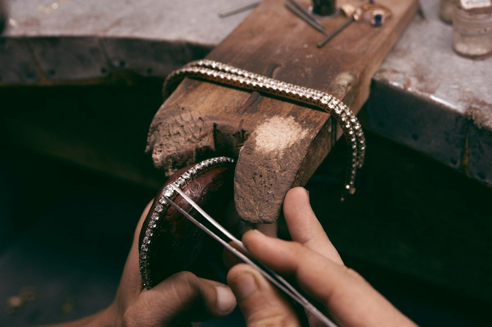
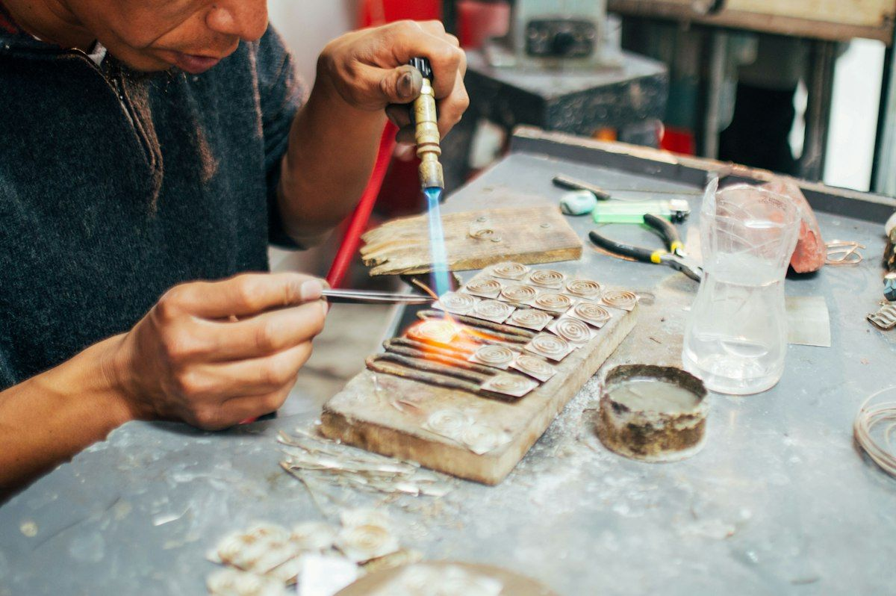
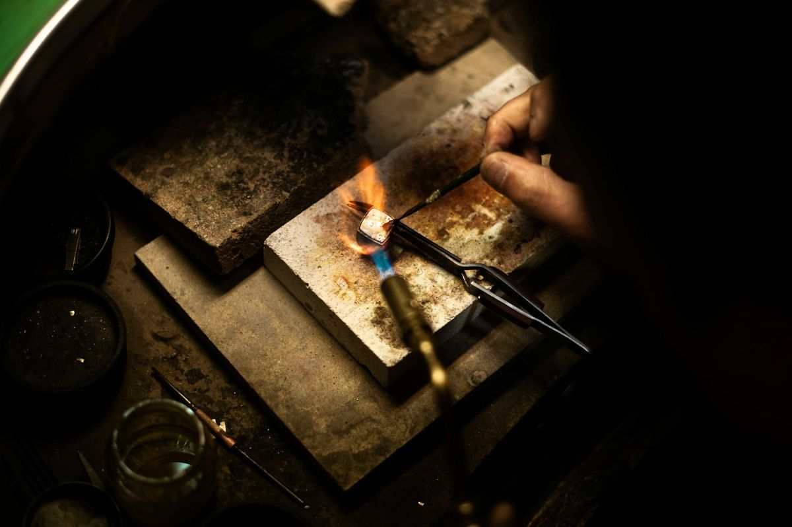
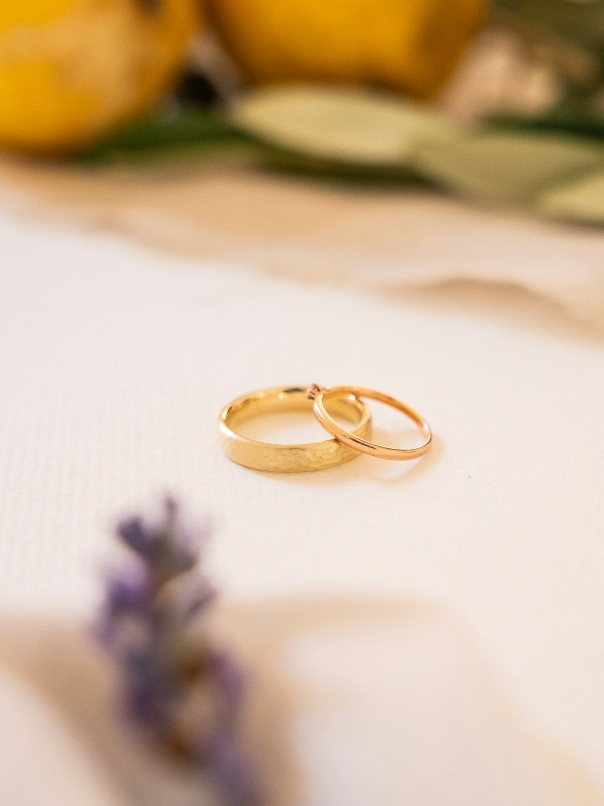
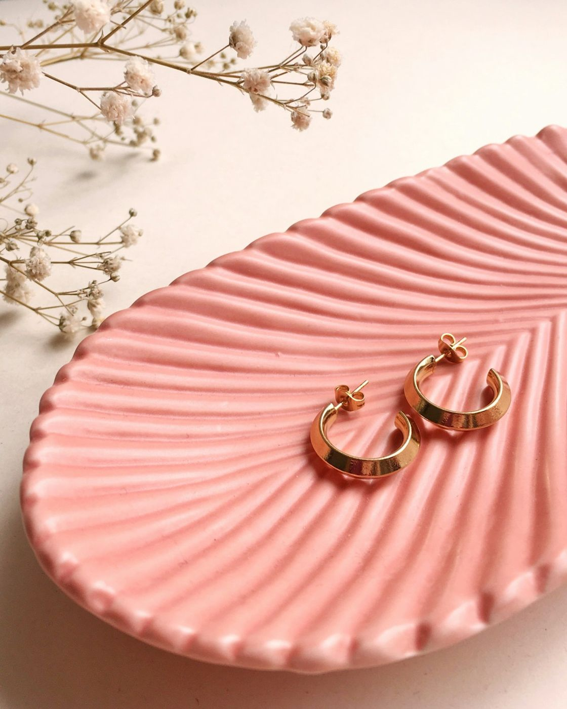

Accueil / L'atelier
L'atelier
Créer, réparer, ajuster, graver : nos artisans travaillent vos bijoux sur place.


Création sur mesure
Votre bijou dessiné avec vous, puis façonné à l'atelier.
Mise à taille
Agrandir ou réduire une bague, en 48 h.

Réparation
Chaîne cassée, fermoir, pierre desserrée : on répare.

Gravure
Prénoms, date, message : à l'intérieur des alliances ou sur un pendentif.

Nettoyage et polissage
Vos bijoux retrouvent leur éclat d'origine.